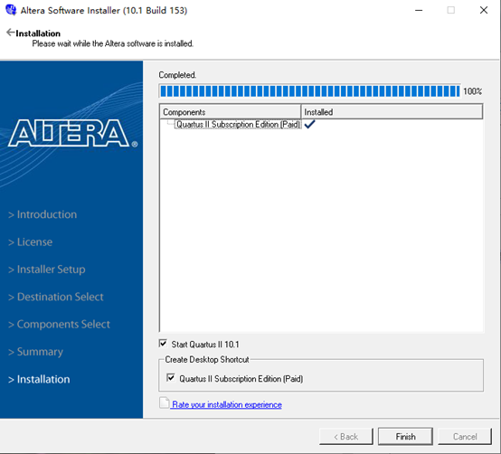
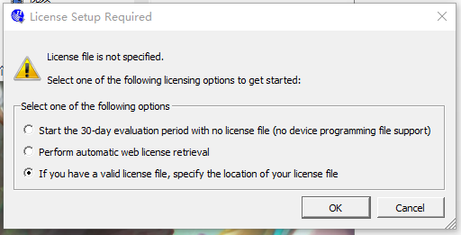
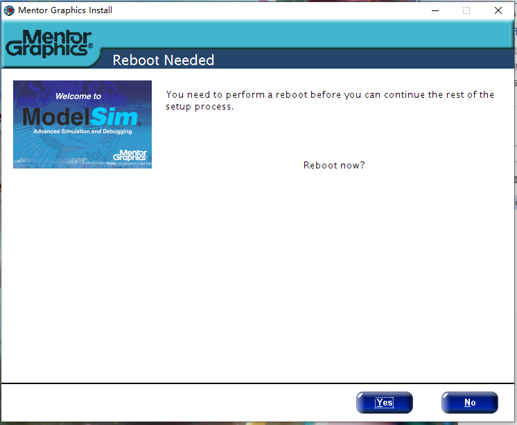
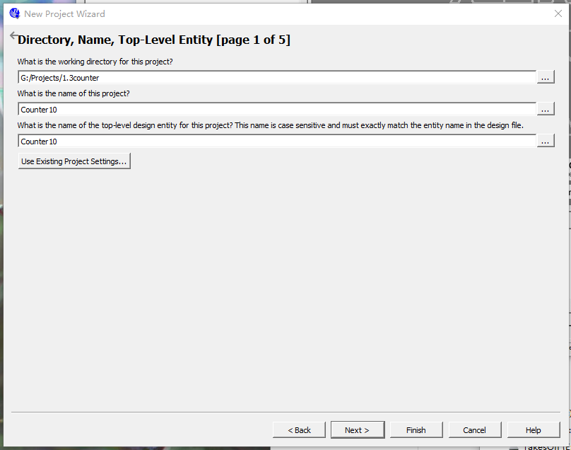
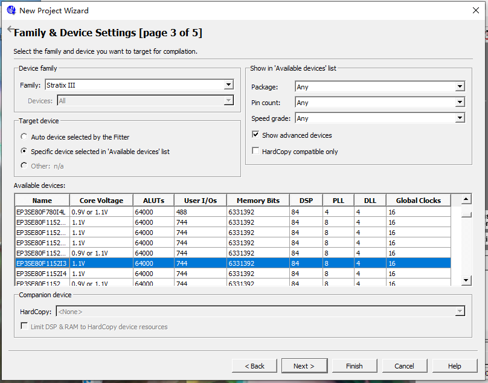
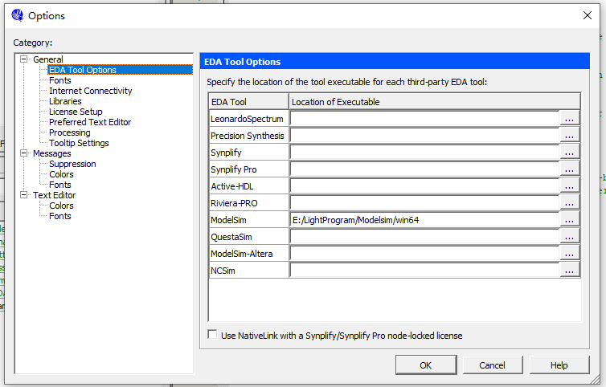
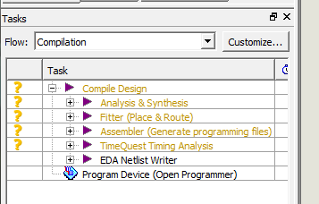
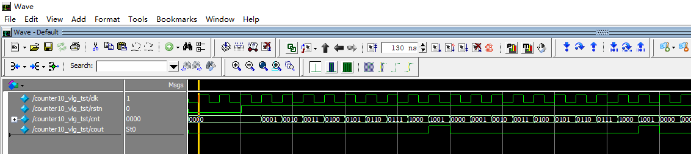

Verilog を学んでシミュレーションを行う際、さまざまなシミュレーション環境を選択できます。FPGA 開発環境には、Xilinx 社の ISE（現在は更新停止）、VIVADO、インテル社の Quartus II があります。ASIC 開発環境には Synopsys 社の VCS があります。また、多くの人は Icarus Verilog と GTKwave を使った方法も利用しており、より軽量です。
ISE や Quartus II にはシミュレータが内蔵されていますが、機能はやや不十分です。そこで、ここでは Quartus II + Modelsim の連携シミュレーションのテスト方法を紹介します。実行環境は 64bit-win10 システムです。
Quartus II インストール
今回紹介する Quartus のバージョンは 10.1 です。
現在、Quartus II の公式サイトには 13.1 以下のバージョンのインストールパッケージはありません。13.1 以上のバージョンのソフトウェアをインストールしてください。機能はほぼ同じです。ダウンロード先：https://fpgasoftware.intel.com/13.1/?edition=subscription&platform=windows
13.1 以上の Quartus II をダウンロードする際、公式サイトでは対応するバージョンの Modelsim も推奨されますので、一緒にダウンロードしてください。
インストールを開始し、インストールパスを変更します。その他はデフォルト設定のまま、手順に従って進めてください。
下図はインストール成功時のスクリーンショットです。

下図のように License file が必要と表示された場合は、ソフトウェア購入時のライセンスファイルを指定する必要があります。

ライセンスファイルで Host-ID を置き換える必要がある場合、ライセンスファイル内の HOSTID を NIC オプションの任意の ID に置き換えるだけで済みます。下図の赤枠の部分を参照してください。

Quartus II 10.1 をインストールした後、Device もインストールする必要があります。つまり、さまざまなプログラマブルロジックデバイス型番をサポートするライブラリファイルをインストールする必要があります。そうしないと、Quartus II でプロジェクトを正常に作成できません。
インストールパスには Quartus II のインストールパスを選択する必要があります。このとき、Device インストールは Quartus II を自動的に認識します。
最新の Quartus II（例：2016 バージョン）は、一体化インストールに対応しています。
Modelsim インストール
Modelsim は modelsim-win64-10.1c-se バージョンを選択します。
インストールパスも変更する必要がありますが、その後はデフォルト設定のまま操作してください。
インストール完了後、PC の再起動を求められる場合があります。再起動してください。

Quartus II プロジェクトの作成
プロジェクトの作成
File->New project Wizard
作業パスとプロジェクト名、トップモジュール名を設定します。
注意：パスと名前を設定する際に、中国語の文字を含めることはできません。

デバイス型番の選択
ここでは簡単なシミュレーションのみを行い、ダウンロードや書き込みなどは行わないため、具体的なデバイスを気にせず、任意のものを選んで問題ありません。
その後、Finish になるまで Next をクリックし続けます。

Verilog ソースファイルの新規作成
次に、4 ビット幅の 10 進カウンタで簡単なシミュレーションを行います。
クリック：File->New->Verilog HDL File->OK
クリック：File->Save As
モジュール名を counter10.v と入力します。
注意すべき点として、トップモジュール名は必ずプロジェクト名と一致させる必要があります。そうしないとエラーになります（図を参照）。
Verilog コードをファイル counter10.v にコピーし、ワンクリックでコンパイルを実行します（実際にはコンパイル、合成、配置配線などが含まれます）。
エラーが発生した場合は、Error log をクリックしてエラーを特定し、修正を行い、Error がなくなるまで繰り返します。

Quartus II から Modelsim を呼び出したシミュレーション
シミュレーション設定を Modelsim-altera にします。
クリック：Tool->Options->EDA Tool Options
Modelsim の後ろのアドレスを、Modelsim 起動プログラムのパスに変更します。

シミュレータの選択
クリック：Assignments -> Simulation
Tool name で ModelSim を選択し、Format、Time scale などを設定します。図を参照してください。

testbench ファイルの記述
クリック：Processing->start->Start TestBench Template Writer
設定が正しければ、プロジェクトパス simulation/modelsim の下に生成されるのは.vtファイルです。
.vtファイルテンプレートには、ポート部分のコード、インターフェース変数の宣言、インスタンス化ステートメントのマッピングなどがすでに用意されています。私たちがすべきことは、テストコードを testbench の適切な位置に記入することです。
ここでは簡単にクロックとリセットの駆動コードを記述します。下図を参照してください。

testbench をプロジェクトに追加します。
クリック：Assignments -> Settings -> Simulation
Compile test bench オプションで new を選択し、Test bench name を設定し、File name の参照を使用して、前の手順で生成した .vt ファイルをプロジェクトに追加します。
注意すべき点として、testbench ファイル名は testbench 内のトップモジュール名と一致させる必要があります。そうしないと、後で Modelsim を起動する際にエラーが発生し、正常にシミュレーションできなくなります。

再びワンクリックでコンパイルします。
このとき、Tasks 欄のコンパイルステータスが「?」に変わっていることがわかります。再びワンクリックでコンパイルする必要があります。

Modelsim を呼び出してシミュレーション
クリック：Tools->Run simulation Tool->RTL Simulation
これで Modelsim ソフトウェアが自動的に起動します。
Modelsim の操作方法については、ここでは具体的に説明しません。
シミュレーション波形図からわかるように、私たちの設計は 10 進計数の基本機能を実現しています。

まとめ
私の記憶では、Quartus II + Modelsim の連携シミュレーション機能は強力で、インストールも簡単でした。数年経ってこの作業をやり直してみると、手順がやや煩雑になっていることに気づき、一晩かけて解決しました。多くの詳細も上に挙げたので、十分に注意してください。ただし、皆さんが今後大規模なデジタルモジュールのシミュレーションを行う機会があれば、この方法の有効性を実感できるでしょう。
今後のチュートリアルでは、一部の簡単なシミュレーションは別のソフトウェアで行う可能性があり、スクリーンショットの画面が Modelsim と一致しない場合があります。皆さんはそれを見てシミュレーションの正確性を疑う必要はありません。ここに特に説明しておきます。
設計モジュールと testbench のソースコードもすべて提供しますので、各自でシミュレーションと検証が十分に可能です。
クリックしてノートを共有
<p style="font-size:14px;">ノートは本記事の内容を拡張したものである必要があります！</p><br> <p style="font-size:12px;"><a href="../tougao.html" target="_blank">記事投稿は、こちらをクリックできます</a></p> <p style="font-size:14px;"><a href="./runoob-user-test-intro.html" target="_blank">登録招待コードの取得方法</a></p> <h3 class="text-muted"><i class="fa fa-info-circle" aria-hidden="true"></i> ノートを共有する前に<a href=".." class="runoob-pop">ログイン</a>が必要です！</h3> <p><a href="./runoob-user-test-intro.html" target="_blank">登録招待コードの取得方法</a></p>